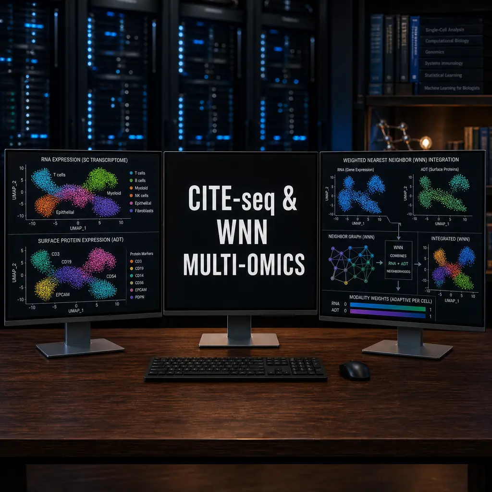
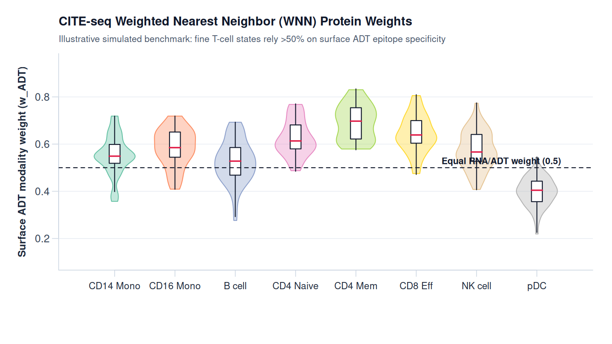

Multi-Omics: CITE-seq & WNN Integration
Nasir Mahmood Abbasi, PhD
Bioinformatics Educator

CITE-seq measures mRNA transcripts and oligonucleotide-tagged surface antibodies (ADTs) in the same single cells. This template builds a dual-assay Seurat object from matched count matrices, preprocesses RNA and protein separately, computes a weighted-nearest-neighbor (WNN) graph, and verifies cluster markers in both modalities.
Format: Advanced template. Adapt this weighted nearest-neighbor (WNN) Seurat workflow to paired RNA and ADT count matrices from your own CITE-seq experiment or downloaded public matrices such as the GSE100866 cord blood (CBMC) dataset.
What problem this solves: Concatenating ~20,000 RNA genes with 10-200 antibody tags into one matrix lets the larger assay or noisier cell-to-cell antibody background dominate Euclidean distances. Seurat WNN avoids concatenation by building separate low-dimensional reductions and learning per-cell modality weights from local neighborhood prediction accuracy.
What you will be able to do:
- Align and validate matched RNA and ADT count matrices (features in rows, cell barcodes in columns) into one Seurat object.
- Preprocess RNA (QC filtering,
LogNormalize, variable genes, PCA) and ADT (CLRwithmargin = 2ordsbdenoising, protein PCA) independently. - Run
FindMultiModalNeighborsto compute per-cell weights (RNA.weight,ADT.weight), buildwnn.umap, and cluster on thewsnngraph. - Diagnose modality weights, compare WNN against unimodal embeddings, and confirm cluster markers separately in both assays.
Prerequisites & time: About 30-45 minutes on a standard workstation for a 5,000-10,000 cell dataset. Assumes familiarity with single-cell QC and PCA (scRNA-seq Basics) and R fundamentals (R & Tidyverse Fundamentals). Written for Seurat v4/v5 in R with ggplot2.
How CITE-seq and WNN work before you run code
In droplet CITE-seq (Stoeckius et al., 2017), cells are stained with antibodies conjugated to short DNA barcodes carrying a poly-A tail, called antibody-derived tags (ADTs). Inside each droplet, poly-dT capture beads bind both cellular mRNA and surface-bound ADTs, yielding two paired UMI count matrices that share the same cell barcodes.
Measuring both layers matters because mRNA and surface protein frequently carry different information in the same cell:
- Where protein adds resolution: Transcript dropout and post-transcriptional regulation often blur surface marker levels in RNA. Standard 3' short-read scRNA-seq also collapses splice isoforms of PTPRC, whereas isoform-specific antibodies cleanly separate naive (CD45RA+) from memory (CD45RO+) T cells.
- Where RNA adds resolution: Antibody panels cover tens to a few hundred targeted surface epitopes. Intracellular states (cell-cycle programs, interferon responses, or transcription factors) and cell types lacking panel antibodies depend on the transcriptome.
How WNN assigns weights (Hao et al., 2021): Rather than mixing raw features, FindMultiModalNeighbors L2-normalizes each modality's PCA embedding (l2.norm = TRUE by default) and builds separate k-nearest-neighbor graphs (default k.nn = 20). For every cell, it tests how accurately neighbors found in RNA space predict that cell's RNA and protein profiles (within-modality vs cross-modality prediction) compared with neighbors found in protein space. Cells whose protein neighbors predict both profiles more reliably receive a higher ADT.weight; cells better predicted by RNA neighbors receive a higher RNA.weight, with RNA.weight + ADT.weight = 1. These weights then combine the modality graphs into a joint neighbor object (weighted.nn) and shared nearest-neighbor graph (wsnn).

FindMultiModalNeighbors integrates their L2-normalized PCA embeddings using per-cell prediction affinities.Stage 1: Build the Seurat object from matched count matrices
Check that R, Seurat, and ggplot2 are installed, and create data/ and results/ from your project root so relative paths resolve consistently:
R --version
Rscript -e 'stopifnot(requireNamespace("Seurat", quietly=TRUE), requireNamespace("ggplot2", quietly=TRUE)); cat("Seurat", as.character(packageVersion("Seurat")), "\n")'
mkdir -p data resultsThe workflow expects two RDS matrices at data/rna_counts.rds and data/adt_counts.rds with features in rows, cell barcodes in columns, unique row/column names, and nonnegative finite raw UMI counts (never log-normalized or scaled values). If you are practicing with the public GEO GSE100866 CBMC dataset, download the two gzipped CSV files (GSE100866_CBMC_8K_13AB_10X-RNA_umi.csv.gz and GSE100866_CBMC_8K_13AB_10X-ADT_umi.csv.gz) into your project directory; base R read.csv() reads .csv.gz files directly. For cohorts above ~10,000 cells, convert to sparse dgCMatrix objects with Matrix::Matrix(..., sparse = TRUE) instead of dense matrices to save memory:
library(Matrix)
rna <- Matrix(as.matrix(read.csv("GSE100866_CBMC_8K_13AB_10X-RNA_umi.csv.gz", row.names = 1, check.names = FALSE)), sparse = TRUE)
adt <- Matrix(as.matrix(read.csv("GSE100866_CBMC_8K_13AB_10X-ADT_umi.csv.gz", row.names = 1, check.names = FALSE)), sparse = TRUE)
stopifnot(length(intersect(colnames(rna), colnames(adt))) > 0)
saveRDS(rna, "data/rna_counts.rds")
saveRDS(adt, "data/adt_counts.rds")
Species-prefix check for the CBMC example: The GSE100866 CBMC RNA matrix prefixes human genes with HUMAN_ and spiked-in negative-control mouse genes with MOUSE_. Following Seurat's CollapseSpeciesExpressionMatrix step before CreateSeuratObject strips HUMAN_ and keeps the top 100 MOUSE_ control features. Do not apply that block blindly to a different dataset: if you skip species preparation on CBMC, Seurat converts underscores to hyphens (HUMAN-MT-CO1) and a standard ^MT- or CD4 lookup misses every human gene.
Save the five R workflow blocks below (cite-build-stage through cite-plots-stage) in order into one file named cite_seq_wnn.R and run Rscript cite_seq_wnn.R. Each stage writes a checkpoint RDS file under results/ so you can resume or re-tune parameters without repeating earlier steps.
R stage 1: validate inputs, align barcodes, and create the dual-assay object
# Load libraries
library(Seurat)
library(ggplot2)
# Read matrices with features in rows and cells in columns
rna_mat <- readRDS("data/rna_counts.rds")
adt_mat <- readRDS("data/adt_counts.rds")
stopifnot(is.matrix(rna_mat) || inherits(rna_mat, "Matrix"),
is.matrix(adt_mat) || inherits(adt_mat, "Matrix"))
stopifnot(!is.null(rownames(rna_mat)), !is.null(colnames(rna_mat)),
!is.null(rownames(adt_mat)), !is.null(colnames(adt_mat)))
stopifnot(!anyDuplicated(rownames(rna_mat)), !anyDuplicated(colnames(rna_mat)),
!anyDuplicated(rownames(adt_mat)), !anyDuplicated(colnames(adt_mat)))
stopifnot(all(is.finite(rna_mat)), all(rna_mat >= 0),
all(is.finite(adt_mat)), all(adt_mat >= 0))
# Keep shared cells in the same order in both matrices
shared_cells <- intersect(colnames(rna_mat), colnames(adt_mat))
if (length(shared_cells) == 0) stop("RNA and ADT have no matching cell barcodes")
rna_mat <- rna_mat[, shared_cells, drop = FALSE]
adt_mat <- adt_mat[, shared_cells, drop = FALSE]
message(length(shared_cells), " shared barcodes retained")
# Prepare the named human CBMC source before Seurat normalizes feature names.
# This route assumes HUMAN_ genes are of interest and MOUSE_ genes are controls.
if (any(startsWith(rownames(rna_mat), "HUMAN_")) &&
any(startsWith(rownames(rna_mat), "MOUSE_"))) {
rna_mat <- CollapseSpeciesExpressionMatrix(
rna_mat, prefix = "HUMAN_", controls = "MOUSE_", ncontrols = 100
)
if (anyDuplicated(rownames(rna_mat))) stop("Species preparation produced duplicate feature names")
message("Prepared human CBMC gene symbols; retained 100 mouse control features")
}
# Add ADT counts after aligning to the cells retained in the RNA object
seurat_obj <- CreateSeuratObject(counts = rna_mat, assay = "RNA", project = "CITE_project")
adt_mat <- adt_mat[, colnames(seurat_obj), drop = FALSE]
seurat_obj[["ADT"]] <- CreateAssayObject(counts = adt_mat)
dir.create("results", showWarnings = FALSE, recursive = TRUE)
saveRDS(seurat_obj, file = "results/seurat_initial.rds")
Check: seurat_obj now holds both RNA and ADT assays in results/seurat_initial.rds, with identical cell barcode ordering across assays. In Seurat v5, CreateSeuratObject() builds an Assay5 layer-based object for RNA while CreateAssayObject() builds a standard Assay (or use CreateAssay5Object() for an Assay5 protein assay); both work with FindMultiModalNeighbors().
Stage 2: Preprocess RNA and ADT separately
RNA: QC filtering, LogNormalize, variable genes, and PCA
Always filter damaged droplets before selecting variable genes so dead cells or debris do not inflate gene-variance estimates. The script checks mitochondrial transcript percentage (^MT- for human; change to ^mt- for mouse) and verifies that percent.mt is not identically zero (which usually signals a species-prefix mismatch). Inspect violin plots of nFeature_RNA, nCount_RNA, percent.mt, and nCount_ADT in your own cohort: cells with nCount_ADT == 0 or extreme antibody clumps (high nCount_ADT outliers) should also be flagged during QC before normalization.
# Basic QC: percent mitochondrial, per-cell counts, per-cell features
# Human-style symbols commonly use MT-; mouse-style symbols commonly use mt-.
# Inspect rownames and verify percent.mt is nonzero/plausible before filtering.
mito_pattern <- "^MT-" # use "^mt-" for mouse-style symbols; adapt to reference
mito_features <- grep(mito_pattern, rownames(seurat_obj), value = TRUE)
if (length(mito_features) == 0) stop("No mitochondrial features matched; inspect names and set mito_pattern")
seurat_obj[["percent.mt"]] <- PercentageFeatureSet(seurat_obj, features = mito_features)
if (all(seurat_obj$percent.mt == 0)) stop("percent.mt is all zero; verify species-specific feature names")
summary(seurat_obj$percent.mt)
# Illustrative thresholds only: inspect QC distributions and adapt to tissue, species, chemistry, and study design
seurat_obj <- subset(seurat_obj, subset = nFeature_RNA > 200 & nCount_RNA > 500 & percent.mt < 20)
# Normalize and find variable features
DefaultAssay(seurat_obj) <- "RNA"
seurat_obj <- NormalizeData(seurat_obj, normalization.method = "LogNormalize", scale.factor = 1e4)
seurat_obj <- FindVariableFeatures(seurat_obj, selection.method = "vst", nfeatures = 3000)
seurat_obj <- ScaleData(seurat_obj, features = VariableFeatures(seurat_obj))
seurat_obj <- RunPCA(seurat_obj, features = VariableFeatures(seurat_obj), reduction.name = "pca")
# Save
saveRDS(seurat_obj, file = "results/seurat_rna_pca.rds")
Example output (illustrative, abbreviated):
Min. 1st Qu. Median Mean 3rd Qu. Max.
0.000 1.820 2.640 3.110 3.890 24.510
Centering and scaling data matrix
PC_ 1
Positive: LYZ, S100A9, S100A8, FCN1, CST3
Negative: CD3D, LTB, IL7R, CD3E, TRACIf your study spans strong sequencing-depth gradients or multiple batches, compare LogNormalize (using 2,000-3,000 HVGs) against SCTransform() before integration; see scRNA-seq Quality Control and Experimental Design & Batch Effects for batch-aware normalization guidance.
ADT: centered log-ratio (CLR) normalization and protein PCA
Surface protein panels typically measure 10-200 targeted antibodies where almost every feature carries biological signal, so do not run variable-feature selection on ADT. Instead, include all ADT features and normalize with CLR (centered log-ratio) using margin = 2. Unlike RNA's LogNormalize (which divides by total UMIs), CLR divides each antibody count by a geometric reference baseline, and margin = 2 computes that baseline within each cell across antibodies (whereas Seurat's function default margin = 1 computes it across all cells for each antibody).
# Switch to ADT assay
DefaultAssay(seurat_obj) <- "ADT"
# CLR normalization. margin = 2 performs per-cell centering across proteins (common default for CITE-seq)
# Note: margin = 1 normalizes across cells for each protein; choose based on experimental design.
seurat_obj <- NormalizeData(seurat_obj, normalization.method = "CLR", margin = 2)
# Scale and run PCA on all ADT features (usually few proteins; do not select HVGs)
adt_features <- rownames(seurat_obj[["ADT"]])
seurat_obj <- ScaleData(seurat_obj, features = adt_features)
adt_npcs <- min(18L, length(adt_features) - 1L, ncol(seurat_obj) - 1L)
if (adt_npcs < 2L) stop("Too few ADT features or cells for this PCA/WNN example")
seurat_obj <- RunPCA(seurat_obj, features = adt_features, npcs = adt_npcs, reduction.name = "apca")
# Save
saveRDS(seurat_obj, file = "results/seurat_adt_pca.rds")
Why margin = 2 vs margin = 1 behaves differently (runnable base-R check)
To see why margin = 2 is preferred for multi-antibody CITE-seq panels, run Seurat's exact CLR formula (log1p(x / exp(sum(log1p(x[x > 0])) / length(x)))) in base R on four synthetic cells: T_low and T_high are biologically identical CD4+ T cells that differ only by a 3x staining/sequencing depth boost, alongside one B cell and one NK cell:
adt <- matrix(
c(120, 80, 4, 5,
360, 240, 12, 15,
5, 3, 220, 4,
8, 4, 3, 180),
nrow = 4,
dimnames = list(
c("CD3", "CD4", "CD19", "CD56"),
c("T_low", "T_high", "B_cell", "NK_cell")
)
)
seurat_clr <- function(x) {
log1p(x / exp(sum(log1p(x[x > 0]), na.rm = TRUE) / length(x)))
}
cat("--- CLR margin = 2 (per cell, across antibodies) ---\n")
print(round(apply(adt, 2, seurat_clr), 2))
cat("\n--- CLR margin = 1 (per antibody, across cells) ---\n")
print(round(t(apply(adt, 1, seurat_clr)), 2))Observed output (executed in R 4.6.1):
--- CLR margin = 2 (per cell, across antibodies) ---
T_low T_high B_cell NK_cell
CD3 1.82 1.87 0.33 0.47
CD4 1.49 1.54 0.21 0.26
CD19 0.16 0.17 2.90 0.20
CD56 0.19 0.21 0.27 2.67
--- CLR margin = 1 (per antibody, across cells) ---
T_low T_high B_cell NK_cell
CD3 1.40 2.32 0.12 0.19
CD4 1.44 2.36 0.11 0.15
CD19 0.23 0.57 2.72 0.18
CD56 0.26 0.63 0.21 2.44Under margin = 2, T_low (CD3 = 1.82, CD4 = 1.49) and T_high (CD3 = 1.87, CD4 = 1.54) align closely because per-cell centering divides out the 3x cell-wise staining depth difference. Under margin = 1, that 3x technical depth gap remains large (1.40 vs 2.32) and even raises background CD19 and CD56 counts in T_high.
| Method | What it adjusts for | When to use it | Main requirement / caveat |
|---|---|---|---|
CLR (margin = 2) | Per-cell antibody sequencing depth and global staining efficiency | Default Seurat choice for panels with 10+ diverse lineage markers when only filtered matrices are available | Assumes the geometric mean across antibodies is roughly stable per cell; very small or lineage-skewed panels can induce compositional shifts |
CLR (margin = 1) | Per-protein count range across all cells | Tiny panels (1-5 markers) or single-lineage panels where per-cell geometric mean shifts with cell state | Does not remove cell-to-cell total staining depth or sticky-cell background |
dsb (DSBNormalizeProtein) | Ambient unbound antibody noise (from empty droplets) and cell-to-cell technical covariance | Recommended when raw unfiltered 10x droplet matrices and spiked-in isotype controls are available | Requires raw raw_feature_bc_matrix/ with well-defined RNA-empty droplets; replace CLR step before ScaleData/RunPCA |
Optional alternative: ambient and isotype denoising with dsb
Unlike mRNA, unbound antibody-oligo conjugates in droplet suspensions create substantial ambient background and cell-specific non-specific binding ("sticky" cells and Fc-receptor binding). When raw unfiltered droplet matrices and isotype control antibodies (for example mouse IgG1, IgG2a, IgG2b) are available, dsb (Mulè et al., 2022) subtracts ambient protein levels from empty droplets and removes per-cell technical background covariance before apca:
library(dsb)
isotypes <- c("IgG1", "IgG2a", "IgG2b")
dsb_norm <- DSBNormalizeProtein(
cell_protein_matrix = adt_cells,
empty_drop_matrix = adt_empty,
denoise.counts = TRUE,
use.isotype.control = TRUE,
isotype.control.name.vec = isotypes
)
seurat_obj[["ADT"]] <- SetAssayData(seurat_obj[["ADT"]], slot = "data", new.data = dsb_norm)Stage 3: Run WNN integration, clustering, and stability checks
Before running FindMultiModalNeighbors, inspect ElbowPlot(seurat_obj, reduction = "pca", ndims = 50) and ElbowPlot(seurat_obj, reduction = "apca", ndims = adt_npcs) to decide how many PCs capture structured signal. The code below bounds requested PCs by the dimensions actually present in pca and apca: for instance, the 13-antibody CBMC panel yields at most 12 protein PCs (length(adt_features) - 1), so capping adt_dims with min(18L, adt_available) prevents out-of-bounds errors while keeping 18L as an upper bound for larger panels.
# Ensure RNA is default for the function that requires "pca" as an entry
DefaultAssay(seurat_obj) <- "RNA"
# Bound each requested range by the dimensions actually produced.
rna_available <- ncol(Embeddings(seurat_obj, reduction = "pca"))
adt_available <- ncol(Embeddings(seurat_obj, reduction = "apca"))
if (rna_available < 2L || adt_available < 2L) stop("Need at least two PCs per modality for this example")
rna_dims <- seq_len(min(30L, rna_available))
adt_dims <- seq_len(min(18L, adt_available))
message("WNN PCs: RNA=", length(rna_dims), "; ADT=", length(adt_dims))
# Find multi-modal neighbors with the inspected, available dimensions.
seurat_obj <- FindMultiModalNeighbors(
seurat_obj,
reduction.list = list("pca", "apca"),
dims.list = list(rna_dims, adt_dims),
modality.weight.name = c("RNA.weight", "ADT.weight")
)
# Build a UMAP on the weighted neighbor graph and cluster using the WNN graph
seurat_obj <- RunUMAP(seurat_obj, nn.name = "weighted.nn", reduction.name = "wnn.umap", reduction.key = "wnnUMAP_")
seurat_obj <- FindClusters(seurat_obj, graph.name = "wsnn", algorithm = 3, resolution = 0.5)
# Save final integrated object
# Record exactly the clustering result produced by this run as active identities.
cluster_cols <- grep("^wsnn_res\\.", colnames(seurat_obj[[]]), value = TRUE)
if (length(cluster_cols) == 0) stop("No wsnn resolution column found; inspect metadata after FindClusters")
cluster_col <- tail(cluster_cols, 1)
Idents(seurat_obj) <- seurat_obj[[cluster_col, drop = TRUE]]
stopifnot(nlevels(Idents(seurat_obj)) > 1)
print(table(Idents(seurat_obj)))
saveRDS(seurat_obj, file = "results/seurat_wnn_integrated.rds")
Example output (illustrative, abbreviated):
WNN PCs: RNA=30; ADT=12
Calculating cell-specific modality weights
Finding 20 nearest neighbors for each modality.
Calculating kernel bandwidths
Finding multimodal neighbors
Constructing multimodal KNN graph
Constructing multimodal SNN graph
Modularity Optimizer version 1.3.0 by Ludo Waltman and Nees Jan van Eck
Number of communities: 9
0 1 2 3 4 5 6 7 8
241 188 152 124 97 78 54 41 24Clustering algorithm and resolution checks: FindClusters(..., graph.name = "wsnn", algorithm = 3) uses the Smart Local Moving (SLM) modularity optimizer from Seurat's WNN vignette; algorithm = 1 runs Louvain and algorithm = 4 runs Leiden (which requires leidenbase). Rather than accepting resolution = 0.5 blindly, test a small grid (for example 0.2, 0.5, 0.8) and verify that every retained cluster has distinct RNA or ADT marker support rather than splitting technical depth or QC artifacts.
Stage 4: Inspect modality weights, embeddings, and dual-assay markers
Review WNN UMAP, modality-weight distributions, and paired feature plots together before naming any cell type.

This stage writes five white-background PNG diagnostics under results/ and prints summaries of RNA.weight and ADT.weight. It checks that CD4 exists in both assays; substitute another shared marker (such as CD8A or CD14) if your panel lacks CD4.
stopifnot(all(c("wnn.umap") %in% Reductions(seurat_obj)),
all(c("RNA.weight", "ADT.weight") %in% colnames(seurat_obj[[]])))
print(summary(seurat_obj$RNA.weight)); print(summary(seurat_obj$ADT.weight))
stopifnot("CD4" %in% rownames(seurat_obj[["RNA"]]), "CD4" %in% rownames(seurat_obj[["ADT"]]))
p_wnn <- DimPlot(seurat_obj, reduction = "wnn.umap", group.by = "ident")
ggplot2::ggsave("results/wnn_umap.png", p_wnn, width = 7, height = 5, bg = "white")
p_rna_weight <- FeaturePlot(seurat_obj, features = "RNA.weight", reduction = "wnn.umap")
ggplot2::ggsave("results/rna_weight.png", p_rna_weight, width = 7, height = 5, bg = "white")
p_adt_weight <- FeaturePlot(seurat_obj, features = "ADT.weight", reduction = "wnn.umap")
ggplot2::ggsave("results/adt_weight.png", p_adt_weight, width = 7, height = 5, bg = "white")
DefaultAssay(seurat_obj) <- "RNA"
ggplot2::ggsave("results/cd4_rna.png", FeaturePlot(seurat_obj, features = "CD4", reduction = "wnn.umap"), width = 7, height = 5, bg = "white")
DefaultAssay(seurat_obj) <- "ADT"
ggplot2::ggsave("results/cd4_adt.png", FeaturePlot(seurat_obj, features = "CD4", reduction = "wnn.umap"), width = 7, height = 5, bg = "white")
DefaultAssay(seurat_obj) <- "RNA"
Example output (illustrative, abbreviated):
Min. 1st Qu. Median Mean 3rd Qu. Max.
0.1420 0.3810 0.4950 0.5020 0.6180 0.8640
Min. 1st Qu. Median Mean 3rd Qu. Max.
0.1360 0.3820 0.5050 0.4980 0.6190 0.8580Compare unimodal UMAPs and verify RNA and ADT markers separately
After generating the five core plots, verify two things before annotating cell types: (1) whether WNN actually improves separation over RNA-only or ADT-only embeddings, and (2) which genes and proteins define each WNN cluster. Because features like CD4 or CD19 can exist in both assays, specify assay = "ADT" or prefix with the assay key (Key(seurat_obj[["ADT"]]), typically "adt_", giving "adt_CD4") whenever RNA is the active default assay:
# 1. Compare WNN embedding against RNA-only and ADT-only UMAPs
seurat_obj <- RunUMAP(seurat_obj, reduction = "pca", dims = rna_dims, reduction.name = "rna.umap", reduction.key = "rnaUMAP_")
seurat_obj <- RunUMAP(seurat_obj, reduction = "apca", dims = adt_dims, reduction.name = "adt.umap", reduction.key = "adtUMAP_")
p_compare <- DimPlot(seurat_obj, reduction = "rna.umap", label = TRUE) +
DimPlot(seurat_obj, reduction = "adt.umap", label = TRUE) +
DimPlot(seurat_obj, reduction = "wnn.umap", label = TRUE)
# 2. Identify markers separately per modality for a chosen cluster (e.g., cluster "0")
rna_markers <- FindMarkers(seurat_obj, ident.1 = "0", assay = "RNA", only.pos = TRUE, min.pct = 0.25)
adt_markers <- FindMarkers(seurat_obj, ident.1 = "0", assay = "ADT", only.pos = TRUE)
head(rna_markers, 10)
head(adt_markers, 10)
# 3. Disambiguate shared feature names across assays using the adt_ key
DefaultAssay(seurat_obj) <- "RNA"
FeaturePlot(seurat_obj, features = c("CD4", "adt_CD4"), reduction = "wnn.umap")How to interpret modality weights accurately
- High
ADT.weight(> 0.5): Protein neighbors predicted that cell's local molecular state more accurately than RNA neighbors under your chosen preprocessing anddims.list. Common in CD4+/CD8+ T cells, naive/memory T-cell states (CD45RA vs CD45RO), and NK subsets. - High
RNA.weight(> 0.5): Transcriptome structure separated that cell's neighborhood better than the antibody panel, typical for progenitor populations, erythroid/cycling cells, or states lacking dedicated surface antibodies in the panel. - What WNN weights do not establish: Weights reflect local signal-to-noise under your chosen normalization and PC count, not biological ground truth or assay quality. A sticky or saturated antibody can artificially inflate
ADT.weight, and cluster labels still require marker and QC verification.
Troubleshooting common issues
1. Sticky or saturated antibodies dominate ADT PCA and WNN weights
- Symptom: One or two surface markers drive PC1 of
apcaand produce uniformly highADT.weightacross unrelated clusters. - Likely cause: Unbound antibody aggregates, Fc-receptor binding on monocytes/myeloid cells, or running CLR with
margin = 1across cells with varying staining depth. - Fix: Plot raw ADT count distributions per protein (
VlnPloton slot/layercounts), confirmmargin = 2inNormalizeData(or switch todsbusing empty droplets and isotype controls), and filter extremenCount_ADTclump outliers.
2. Few or flat ADT principal components
- Symptom:
ElbowPlot(seurat_obj, reduction = "apca")looks flat and WNN collapses toward RNA-only structure. - Likely cause: Small antibody panel (for example < 10 proteins), poor staining signal-to-noise, or too many uninformative noise PCs included in
rna_dims. - Fix: Check per-protein dynamic range and isotype controls; trim noisy trailing PCs from both
rna_dimsandadt_dimsinstead of blindly passing1:30and1:18. On very small panels (< 8 antibodies), evaluate whether all proteins should be used directly or whether protein signal warrants WNN over unimodal RNA plus ADT overlays.
3. Mismatched barcodes or Seurat v5 split-layer errors
- Symptom: Zero shared cells during
intersect(colnames(rna_mat), colnames(adt_mat)), or Seurat v5 raises an error about unjoined layers during multi-sample marker testing. - Likely cause: Sample prefixes/suffixes differ between RNA and ADT matrices (for example
-1vs_1), or multiple samples were merged in a Seurat v5Assay5without joining layers. - Fix: Inspect
head(colnames(rna_mat))andhead(colnames(adt_mat))to harmonize barcode suffixes before object creation. In multi-sample Seurat v5 objects, runseurat_obj <- JoinLayers(seurat_obj)on the RNA assay beforeFindMarkersorFindVariableFeatures.
4. Plotting CD4 shows RNA expression instead of ADT protein
- Symptom:
FeaturePlot(seurat_obj, features = "CD4")looks sparse and drops out across T cells. - Likely cause:
DefaultAssay(seurat_obj)is"RNA", so Seurat fetches mRNA counts rather than protein counts. - Fix: Pass the assay key explicitly (
"adt_CD4") or switchDefaultAssay(seurat_obj) <- "ADT"before plotting, and reset to"RNA"afterward.
Practice check
1. Look back at the executed base-R CLR example above. Why did T_high (3x raw antibody counts compared with T_low) match T_low under margin = 2 (CD3: 1.87 vs 1.82) but diverge sharply under margin = 1 (2.32 vs 1.40)?
Check answer 1
margin = 2 computes the geometric reference across all antibodies inside each cell, so multiplying every antibody count in a cell by 3x scales both the numerator and the cell's geometric baseline similarly. margin = 1 normalizes each antibody across all cells, leaving cell-to-cell total staining depth intact.
2. Suppose Cluster 4 shows median ADT.weight = 0.74 and RNA.weight = 0.26. Does that prove Cluster 4 is a biologically valid T-cell subtype?
Check answer 2
No. A high ADT.weight only shows that neighbors in apca space predicted that cell's profile better than pca space under your chosen preprocessing and PC caps. You still must inspect raw/normalized ADT markers (FindMarkers(..., assay = "ADT")), RNA markers (assay = "RNA"), QC covariates (nCount_ADT, percent.mt), and unimodal UMAPs to rule out sticky antibodies or doublets.
Scope, validation notes, and next steps
Bounded verification record: All five named R stages (cite-build-stage through cite-plots-stage) ran end-to-end on the first 1,000 paired cells of the official GEO CBMC RNA/ADT matrices using Ubuntu 24.04, R 4.3.3, and Seurat 5.0.1, retaining 999 cells, producing 12 PCs from 13 ADT features, completing WNN, and writing all five white-background PNGs. The base-R CLR margin = 2 vs margin = 1 comparison executed locally on R 4.6.1. For full cohorts, save saveRDS(sessionInfo(), file = "results/session_info.rds") and tune QC thresholds, dims.list, and clustering resolution to your panel and tissue.
Continue with related single-cell tutorials on The Omics Hub:
- scRNA-seq Quality Control for doublet, ambient RNA, and batch-aware QC checks before integration.
- Choosing and Checking Cell-Type Annotations for validating WNN cluster identities with reference mapping and marker panels.
- Single-Cell RNA-seq Downstream Analysis for pseudobulk differential expression and compositional testing after clustering.
References
- Hao Y, Hao S, Andersen-Nissen E, et al. (2021). Integrated analysis of multimodal single-cell data. Cell, 184(13), 3573-3587 (Weighted Nearest Neighbor method). doi:10.1016/j.cell.2021.04.048
- Stoeckius M, Hafemeister C, Stephenson W, et al. (2017). Simultaneous epitope and transcriptome measurement in single cells. Nature Methods, 14(9), 865-868 (CITE-seq). doi:10.1038/nmeth.4380
- Mulè MP, Martins AJ, Tsang JS (2022). Normalizing and denoising protein expression data from droplet-based single cell profiling. Nature Communications, 13, 2099 (
dsb). doi:10.1038/s41467-022-29356-8 - Satija Lab official documentation: Seurat multimodal vignette, Seurat WNN analysis vignette, and NormalizeData CLR reference.
- CRAN package documentation:
dsb: Denoised and Scaled by Background.
Software and package behaviour can change. Please re-check commands against the official documentation. If a command does not work, you find an error, or the tutorial is no longer reproducible, please report it through the Contact page.
Author: Nasir Mahmood Abbasi, PhD - Category: Advanced Single-Cell Analysis